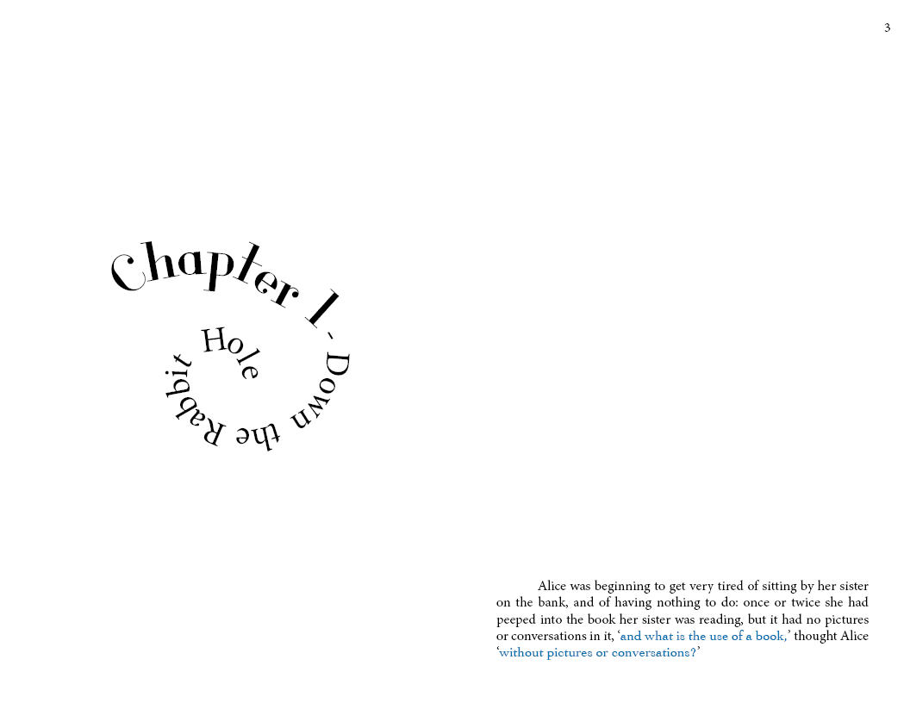
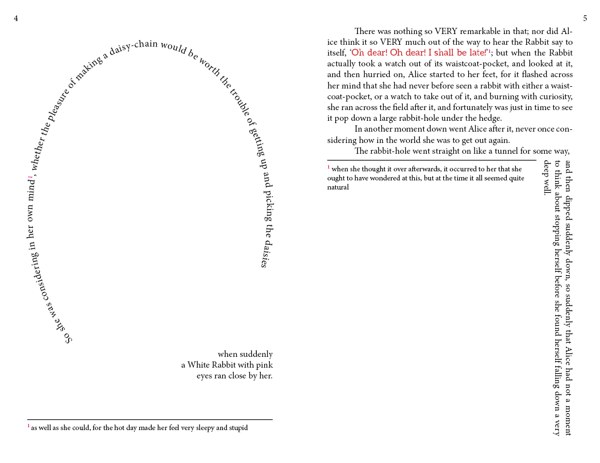
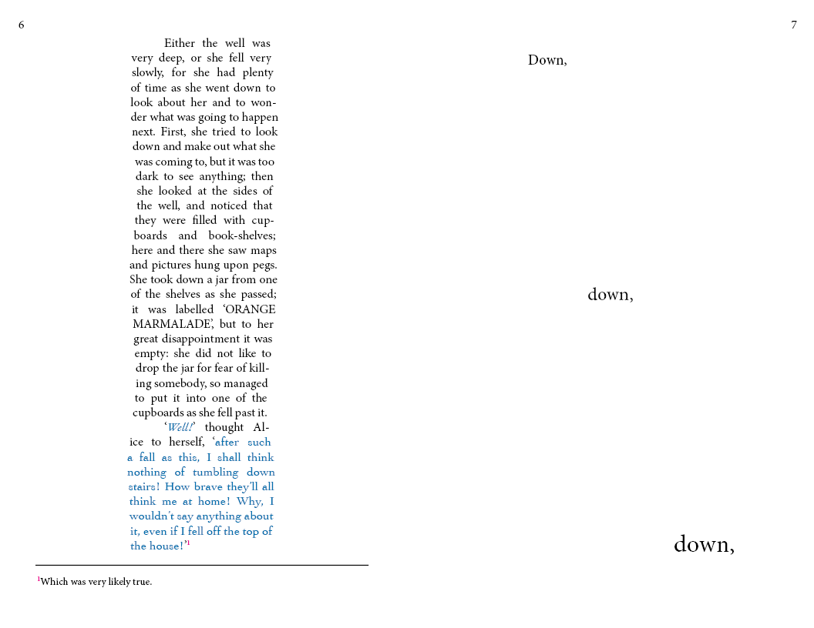
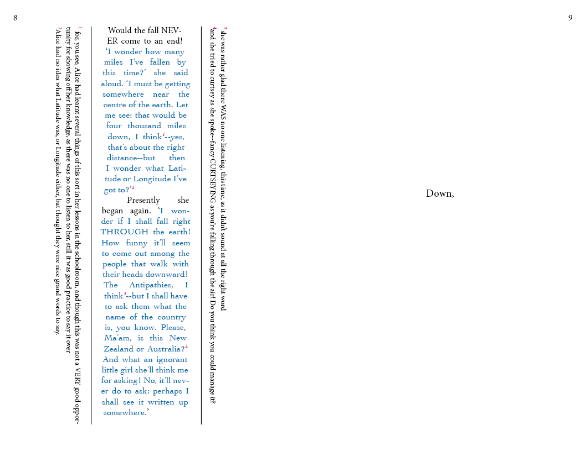
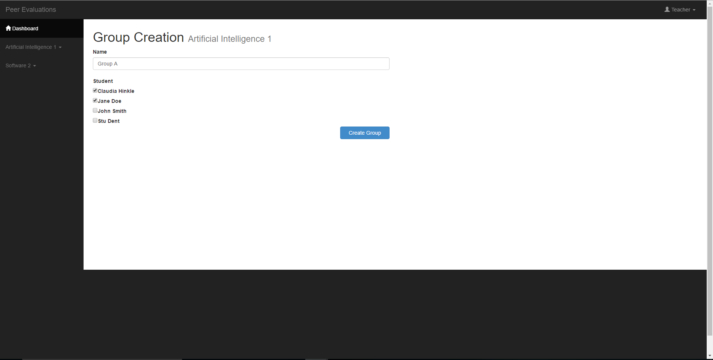
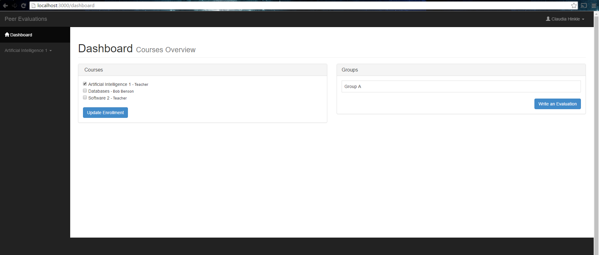
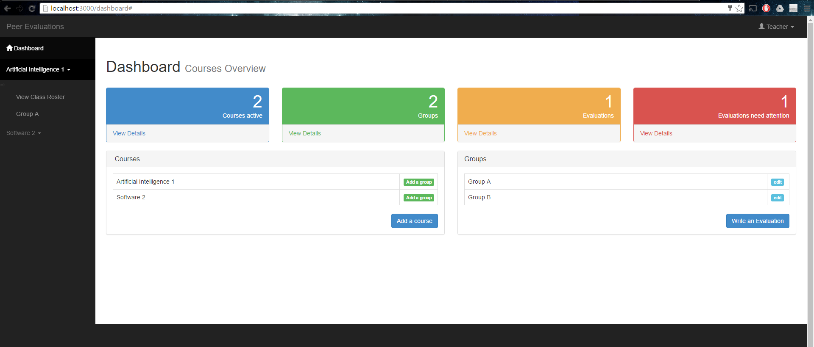
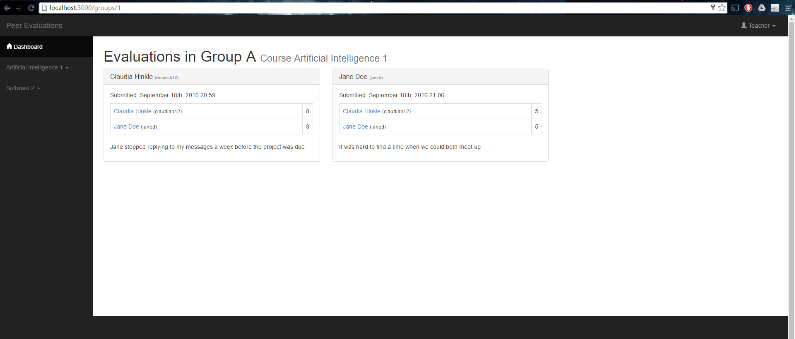
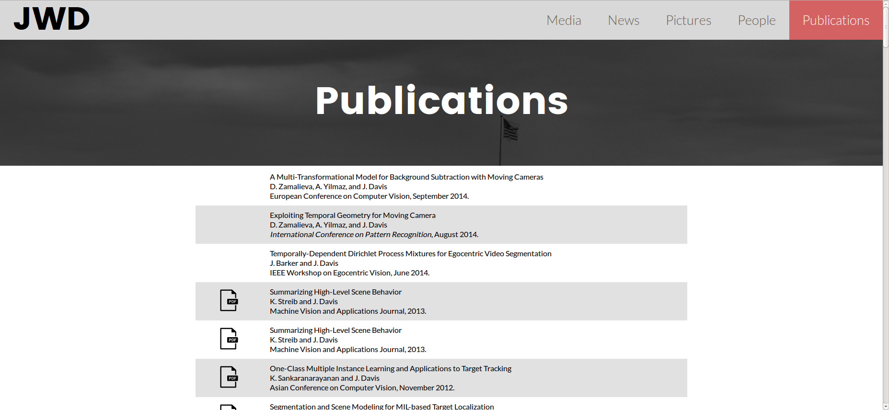

Among many other things, I'm a software developer and graphic designer located in Columbus, OH. I go to a little school called the Ohio State University, where I'm majoring in computer science and minoring in visual communication design. I love front-end development because it allows me to combine both those interests to create something beautiful and functional(hence this elaborate javascript-based portfolio site). The most fun part of programming for me is being creative, whether that's in the user-interactions I create or an AI algorithm behind the scenes — if I'm solving a puzzle I'm happy.
Tldr; I like making cool stuff with cool people, so if you'd like to get in touch I'd love to hear from you!
I created this poster for my Design Concepts course, given the assignment to create an infographic on any issue that interested us. I research the topic and determined how to visualize these shocking statistics, as well as presenting a call to action.
For a typography class, I was tasked with creating an expressive layout for a section of a book that helped tell the story.
   As the Media Chair for the Ohio State chapter of the Association of Computing Machinery Women's Chapter, I was tasked with creating a postcard to hand out to promote the club, particularly with freshman students. The organization supports women in technology through academic, professional, and social events, but most of our gatherings are open to all genders so it was important to find a balance between feminity and typical representations of tech. I settled on a confetti look, but created with simple geometric triangles to tie back to our technology ties, all in our signature purples and grays.
For my Typography class, we were given a document of text to include in a poster for a fictional band tour that was intentionally created to be difficult to place on a poster. However, we were able to choose which musician we would like to be the headliner and design the poster to reflect that artist's style. I chose a quirky Canadian indie rock band. I wanted to capture the intimacy of their music, since they mostly play shows at small venues and interact closely with the audience. Also, most of their music explores the nature of growing up and being in that uncertain transitional stage between childhood and adulthood. To capture both these aspects I chose a design that looked like a sparsely decorated living room, with an old TV placed on the floor and the informational text of the poster appearing to be DIY art written directly on the wall.
I originally created this logo with the intention of featuring it on this website, but I only ended up using it for the favicon. Still, I feel like it accurately depicts my personal brand. I chose a simple geometric shape for the main body of the logo because of its structure and connection to mathematics. I made the decision to use a septagon because I feel like it seems a little quirky, since it doesn't tessellate, which I felt reflected my personality a bit(also 7 is my favorite number). For my initials, though, I chose a cursive font since I felt like it showed my more creative side to tie in my interest for visual design.
For my Web Applications course final, the assignment was simply to build a web app using Rails. For each project in the course, we were able to email the professor and TAs an evaluation of our teammates, so my team chose to create an application to streamline this process. I took the lead on the design of the UI and the database, though now that I know more about relational databases I'd like to improve the design. We created a dashboard view, which allows students to enroll in classes and write evaluations of their group members, while teachers could create classes and groups and view the evaluations. We also created a profile for students showing their average scores, so that teachers and students could judge which students typically contribute the same amount to group projects. We also filtered the evaluations to pull ones with particularly low scores into a separate list to draw professors' attention to.
   My team created the winning project for a challenge presented by the TDA department at Ohio State. Given a sample of real resumes and job descriptions, we developed algorithms to compare the data sets to identify similarities and differences in what employers were looking for and what students put on their resumes. We then represented our findings visually using a Javascript based UI.
For a class project we were tasked with redesigning a professor's personal site using the static site generator Middleman, which allows you to write a website using embedded ruby and Sass, but then process it into ordinary HTML and CSS. This professor had long lists of publications he'd written and media pieces he'd been cited in, so I chose to take advantage of the embedded ruby capabilities of Middleman by storing these lists in YAML files and generating tables from that data using Ruby. This improved readability and maintainability, as well as being great practice for developing a Rails app.
I know it sounds really meta, but I put a lot of work into developing this site. I wanted to create a portfolio that was fun and interesting not only to look at, but also to navigate. After using Javascript at work all summer, I wanted to create something in the language that was truly my own. I coudln't find any examples of a lightweight sliding gallery like I wanted for my portfolio pages, so I built my own with JQuery. As fun as the Javascript is, though, I think my next step will be to create fallback links that work with Javascript disabled.